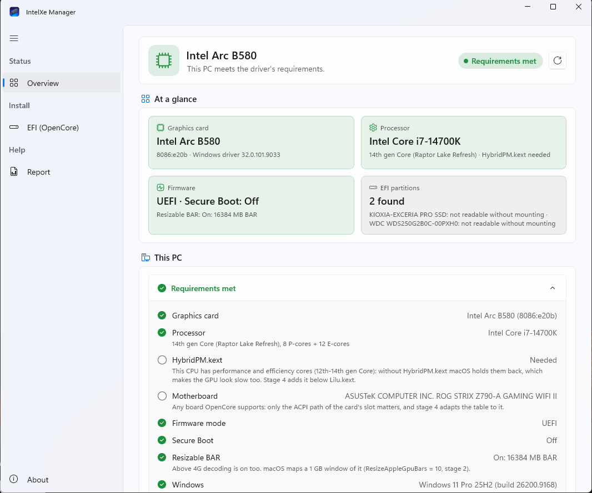

The tools around the driver.Sürücünün çevresindeki araçlar.
An app that installs and watches the driver on macOS, an app and a script that prepare OpenCore from Windows, a probe for GPUs that are not supported yet, and the scripts that turn a problem into a report. Each says where it runs, what it is for, how to get it and how far it was tested.macOS'ta sürücüyü kuran ve izleyen bir uygulama, OpenCore'u Windows'tan hazırlayan bir uygulama ve bir betik, henüz desteklenmeyen GPU'lar için bir yoklama ve bir sorunu rapora dönüştüren betikler. Her biri nerede çalıştığını, ne işe yaradığını, nasıl alınacağını ve ne kadar denendiğini söylüyor.
IntelXe Manager
The macOS app for what otherwise takes Terminal: the state of the machine and the driver; install, repair, undo, uninstall and update; stages 2 and 4 in the OpenCore EFI; Safari, Zink, HiDPI, GPU tests and reports.Aksi hâlde Terminal isteyen işler için macOS uygulaması: makinenin ve sürücünün durumu; kurma, onarma, geri alma, kaldırma ve güncelleme; OpenCore EFI'sinde 2. ve 4. aşamalar; Safari, Zink, HiDPI, GPU testleri ve raporlar.
The setup assistantKurulum yardımcısı
- OpenCore's settings (stage 2), with Safari's in the same change if you want themOpenCore ayarları (2. aşama); isterseniz Safari'ninkiler de aynı değişiklikte
- The driver package: downloaded, signature checked, installedSürücü paketi: indirilir, imzası denetlenir, kurulur
IntelXe.kextand SSDT-ARCOFF in the EFI (and HybridPM on a hybrid CPU)EFI'deIntelXe.kextve SSDT-ARCOFF (hibrit işlemcide HybridPM de)- A GPU testBir GPU testi
- Done, with extras: Safari on the GPU, Zink, HiDPI, the menu bar itemBitti; ekler: GPU'da Safari, Zink, HiDPI, menü çubuğu öğesi
| OverviewGenel bakış | a status header with the one action that matters now; the requirements; start-up warnings with fixesşu an önemli olan tek işi gösteren bir durum başlığı; gereksinimler; açılışta çözümleriyle uyarılar |
| Monitorİzleme | five-minute charts of the GPU clock, temperatures, power and frames; how full the 1 GB window isGPU saati, sıcaklıklar, güç ve kareler için beş dakikalık grafikler; 1 GB'lık pencerenin doluluğu |
| DriverSürücü | download, check, install, repair, undo, uninstall; Safari and WebKitindirme, denetleme, kurma, onarma, geri alma, kaldırma; Safari ve WebKit |
| EFI (OpenCore) | stages 2 and 4, SecureBootModel, undo; every write shows its plan first2. ve 4. aşamalar, SecureBootModel, geri alma; her yazma önce planını gösterir |
| OpenGL (Zink) | the optional Zink package and its switches, per applicationisteğe bağlı Zink paketi ve anahtarları, uygulama uygulama |
| Display · Power and appEkran · Güç ve uygulama | HiDPI modes; the GPU's power profile and clock range, Fast GPU response for appsHiDPI modları; GPU'nun güç profili ve saat aralığı, Uygulamalar için hızlı GPU yanıtı |
| Tests · ReportTestler · Rapor | Metal, OpenGL, OpenCL, video, compute and bandwidth tests; the diagnostics reportMetal, OpenGL, OpenCL, video, hesaplama ve bant genişliği testleri; tanılama raporu |
- PlatformPlatform
- macOS 15 or later, on the PC with the card; English and TurkishmacOS 15 ya da sonrası, kartın takılı olduğu bilgisayarda; İngilizce ve Türkçe
- Get itEdinme
IntelXe-Manager-0.1.5.zipfrom the download section; signed ad hoc, so unpack it as the guide showsindirme bölümünden; ad hoc imzalı, bu yüzden rehberdeki gibi açın- PrivacyGizlilik
- contacts only GitHub and sends no data; changes go through the macOS password dialog, nothing stays runningyalnızca GitHub'a bağlanır, veri göndermez; değişiklikler macOS parola penceresinden geçer, arkada çalışan bir şey kalmaz
- StatusDurum
- the Driver page was used on the test machine, the EFI page on the EFI of its SSD; Undo on a real EFI and a whole install from a fresh macOS were not repeated with the appSürücü sayfası test makinesinde, EFI sayfası onun SSD'sinin EFI'sinde kullanıldı; gerçek bir EFI'de Undo ve temiz bir macOS'tan baştan sona kurulum uygulamayla henüz denenmedi


IntelXe Manager for WindowsWindows için IntelXe Manager
The recommended way to make stages 2 and 4 from Windows: a native app (WinUI 3) with the macOS app's look and wording. It checks the PC, shows the plan of each change to the OpenCore EFI before it writes anything, backs up the whole EFI folder first and can undo; the same rules and the same engine as the script below, so each undoes the other's changes.2. ve 4. aşamaları Windows'tan yapmanın önerilen yolu: macOS uygulamasının görünüşü ve diliyle yerel bir uygulama (WinUI 3). Bilgisayarı denetler, OpenCore EFI'sindeki her değişikliğin planını bir şey yazmadan önce gösterir, önce EFI klasörünün tamamını yedekler ve geri alabilir; aşağıdaki betikle aynı kurallar ve aynı çekirdek, bu yüzden birbirinin değişikliklerini geri alabilirler.
| OverviewGenel bakış | the card and its Windows driver, the CPU and whether it needs HybridPM.kext, UEFI, Secure Boot, Resizable BAR, BitLocker, the EFI partitions; it only readskart ve Windows sürücüsü, işlemci ve HybridPM.kext gerekip gerekmediği, UEFI, Secure Boot, Resizable BAR, BitLocker, EFI bölümleri; yalnızca okur |
| EFI (OpenCore) | stage 2, the Safari setting, stage 4 (IntelXe.kext, SSDT-ARCOFF for the ACPI path you confirm, HybridPM.kext), undo; on an EFI partition or a USB stick's EFI folder; plans in English or Turkish2. aşama, Safari ayarı, 4. aşama (IntelXe.kext, onayladığınız ACPI yolu için SSDT-ARCOFF, HybridPM.kext), geri alma; bir EFI bölümünde ya da USB belleğin EFI klasöründe; planlar Türkçe ya da İngilizce |
| ReportRapor | the Windows diagnostics report, then the issue form with its ID; nothing is uploadedWindows tanılama raporu, ardından kimliğiyle issue formu; hiçbir şey yüklenmez |
- PlatformPlatform
- Windows 10 (2004 or later) or 11, x64; runs from its folder, nothing to install (.NET and the Windows App SDK are inside, about 170 MB); English and TurkishWindows 10 (2004 ya da sonrası) veya 11, x64; kendi klasöründen çalışır, kurulacak bir şey yok (.NET ve Windows App SDK içinde, yaklaşık 170 MB); İngilizce ve Türkçe
- Get itEdinme
IntelXeManager-0.1.5-win-x64.zip(66 MB) from the download section, with the-efi.zip; check its SHA-256 against the release's list first (guide)(66 MB) indirme bölümünden,-efi.zipile birlikte; önce SHA-256'sını sürümün listesiyle karşılaştırın (rehber)- RightsHaklar
- runs with your rights; asks for administrator rights (UAC) only to mount, read and change an EFI partition, through a helper of its own; none for an EFI foldersizin haklarınızla çalışır; yönetici hakkını (UAC) yalnızca bir EFI bölümünü bağlamak, okumak ve değiştirmek için, kendi yardımcısıyla ister; EFI klasörü için istemez
- Signatureİmza
- no code-signing certificate: SmartScreen and the UAC prompt name an unknown publisher (what to check)kod imzalama sertifikası yok: SmartScreen ve UAC penceresi bilinmeyen bir yayımcı gösterir (neyi denetlemeli)
- StatusDurum
- tested on Windows 11 on test EFI folders, its administrator helper included, and with the 32 shared test vectors of the EFI rules; not yet used on a real EFI partition or an EFI a PC then booted. Read each plan before you confirm it.Windows 11'de deneme EFI klasörlerinde, yönetici yardımcısı dahil, ve EFI kurallarının 32 ortak deneme vektörüyle denendi; henüz gerçek bir EFI bölümünde ya da ardından bir bilgisayarın açıldığı bir EFI'de kullanılmadı. Her planı onaylamadan önce okuyun.



The Windows EFI scriptWindows EFI betiği IntelXe-EFI.ps1
The scripted way, for the command line or when the app above cannot run. Makes the config.plist changes and copies the files of stages 2 and 4 in an OpenCore EFI folder you point it to: a USB stick's, or the EFI partition of a disk, which it can mount. It does not build an EFI; it changes only what the driver needs, the same changes as efi.sh on macOS, with a backup before each change and an undo.Betik yolu; komut satırı için ya da yukarıdaki uygulama çalışamadığında. 2. ve 4. aşamaların config.plist değişikliklerini ve dosyalarını, gösterdiğiniz bir OpenCore EFI klasöründe yapar: bir USB belleğinkinde ya da bağlayabildiği bir diskin EFI bölümünde. EFI oluşturmaz; yalnızca sürücünün ihtiyaç duyduğunu, efi.sh'in macOS'ta yaptığı değişikliklerin aynısını, her değişiklikten önce yedekleyerek ve geri alınabilir biçimde değiştirir.
- Settings: plan / apply: SIP, the AMFI boot-arg,
intelxe_surfvram=2, two quirks andReconnectGraphicsOnConnect = falseSettings: plan / apply: SIP, AMFI boot-arg'ı,intelxe_surfvram=2, iki quirk veReconnectGraphicsOnConnect = false - Driver: plan / apply:
IntelXe.kext, SSDT-ARCOFF adapted to your card's ACPI path (read from Device Manager),HybridPM.kexton a 12th–14th gen hybrid CPUDriver: plan / apply:IntelXe.kext, kartınızın ACPI yoluna (Aygıt Yöneticisi'nden okunur) uyarlanmış SSDT-ARCOFF, 12.–14. nesil hibrit işlemcideHybridPM.kext - every change is planned first and carries the plan's SHA-256; a window, and a command lineher değişiklik önce planlanır ve planın SHA-256'sını taşır; bir pencere ve bir komut satırı
- PlatformPlatform
- Windows 10 and 11: Windows PowerShell 5.1 or PowerShell 7, nothing to install; administrator rights only for an EFI partitionWindows 10 ve 11: Windows PowerShell 5.1 ya da PowerShell 7, kurulacak bir şey yok; yönetici hakları yalnızca bir EFI bölümü için
- Get itEdinme
- inside
intel-gpu-macos-driver-0.1.5-efi.zip(download), withREADME-Windows.mdintel-gpu-macos-driver-0.1.5-efi.zip'in içinde (indir),README-Windows.mdile - StatusDurum
- its test suite passes on Windows against a throwaway EFI; the HybridPM and adapted-table steps ran on Windows 11 in the shared vectors of the EFI rules; it has not yet prepared an EFI that a PC then booted. Read each plan before you confirm it.deneme takımı Windows'ta geçici bir EFI'ye karşı geçiyor; HybridPM ve uyarlanmış tablo adımları Windows 11'de EFI kurallarının ortak vektörlerinde çalıştı; henüz ardından bir bilgisayarın açıldığı bir EFI hazırlamadı. Her planı onaylamadan önce okuyun.
Start itBaşlatmak
Right-click IntelXe-EFI.ps1 › Run with PowerShell. If Windows refuses scripts:IntelXe-EFI.ps1'e sağ tık › PowerShell ile Çalıştır. Windows betikleri reddederse:
powershell -ExecutionPolicy Bypass -File .\IntelXe-EFI.ps1
Or from the command lineYa da komut satırından
.\IntelXe-EFI.ps1 -Status -Efi E:\EFI .\IntelXe-EFI.ps1 -Plan driver -Efi E:\EFI .\IntelXe-EFI.ps1 -Apply driver -Efi E:\EFI -Expect <SHA-256> .\IntelXe-EFI.ps1 -Undo -Efi E:\EFI -Expect <SHA-256>
XeProbe
A staged probe for Intel GPUs the driver does not support yet. It answers, one step at a time and only when you ask, whether a GPU identifies itself, wakes, loads its GuC firmware and runs a command on each engine, so that testers can tell us what their GPU does without risking the machine more than each step requires.Sürücünün henüz desteklemediği Intel GPU'lar için aşamalı bir yoklama. Bir GPU'nun kendini tanıtıp tanıtmadığını, uyanıp uyanmadığını, GuC yazılımını yükleyip yüklemediğini ve her motorda bir komut çalıştırıp çalıştırmadığını adım adım ve yalnızca siz istediğinizde yanıtlıyor; böylece deneyenler, makineyi her adımın gerektirdiğinden fazla riske atmadan GPU'larının ne yaptığını bize anlatabiliyor.
- Opt-in: a second personality inside
IntelXe.kextthat attaches only to the device the boot-argxeprobe=0xDEVICEnames, and touches no hardware until root writes a stage numberİsteğe bağlı:IntelXe.kext'in içinde, yalnızcaxeprobe=0xDEVICEboot-arg'ının adlandırdığı aygıta bağlanan ikinci bir kişilik; root bir aşama numarası yazana kadar donanıma dokunmuyor - Stays out of the way: it never writes the display engine's registers, changes only GGTT entries in its own window, and refuses stages 2–5 while another driver holds the GPUYoldan çekiliyor: ekran motorunun yazmaçlarına hiç yazmıyor, GGTT'de yalnızca kendi penceresindeki kayıtları değiştiriyor ve GPU başka bir sürücüdeyken 2.–5. aşamaları reddediyor
- Leaves a trail: a watchdog turns a stalled step into a panic report that names it; an optional NVRAM breadcrumb survives a hard resetİz bırakıyor: bir bekçi, takılan bir adımı onu adlandıran bir panik raporuna çeviriyor; isteğe bağlı bir NVRAM izi sert bir sıfırlamadan sonra da kalıyor
- PlatformPlatform
- macOS with OpenCore, on a PC with the Intel GPU to probeprobe edilecek Intel GPU'nun takılı olduğu bilgisayarda OpenCore'lu macOS
- Get itEdinme
- part of
IntelXe.kextin the-efi.zip; inject it from a USB stick's EFI and keep a working EFI at hand-efi.zip'tekiIntelXe.kext'in parçası; bir USB belleğin EFI'sinden yükleyin ve çalışan bir EFI'yi elinizin altında tutun - StatusDurum
- first version: stages 1 and 2 ran on the Arc B580, and stage 1 on a Raptor Lake integrated GPU, where stage 2 refused as designed because another driver was attached; stages 3–5 have not run on any machine yetilk sürüm: 1. ve 2. aşamalar Arc B580'de, 1. aşama da bir Raptor Lake dahili GPU'sunda çalıştı; orada başka bir sürücü bağlı olduğu için 2. aşama tasarlandığı gibi reddetti; 3.–5. aşamalar henüz hiçbir makinede çalışmadı
Use itKullanmak
- Make a Linux reference report first:
collect-linux.shfrom a live USB.Önce bir Linux referans raporu alın: canlı USB'dencollect-linux.sh. - Put
IntelXe.kextinto a USB stick's EFI (Kernel > Add) and add the boot-argxeprobe=0xDEVICE(and-xeprobecrumbfor the breadcrumb).IntelXe.kext'i bir USB belleğin EFI'sine koyun (Kernel > Add) vexeprobe=0xDEVICEboot-arg'ını ekleyin (iz için-xeprobecrumbda). - Run the stages one at a time, then release:Aşamaları tek tek çalıştırın, sonra bırakın:
sudo sysctl debug.xeprobe.stage=1 # identity# kimlik sudo sysctl debug.xeprobe.stage=2 # forcewake# forcewake sudo sysctl debug.xeprobe.stage=3 # GuC load# GuC yükleme sudo sysctl debug.xeprobe.stage=4 # a store on each engine# her motorda bir yazma sudo sysctl debug.xeprobe.stage=5 # read back# geri okuma sudo sysctl debug.xeprobe.stage=9 # release# bırakma sysctl debug.xeprobe.results
4. Collect: sh collect-macos.sh --probe (after a hang, reboot normally first). Reboot after probing: some GPU state stays changed until then.4. Toplayın: sh collect-macos.sh --probe (bir takılmadan sonra önce normal açın). Yoklamadan sonra yeniden başlatın: bazı GPU durumları o zamana kadar değişik kalıyor.
The diagnostics scriptsTanılama betikleri
Three scripts collect what a problem needs into one file named after a report ID. They only read, upload nothing, and remove serial numbers, UUIDs, MAC addresses and user names before the file is written, then check again.Üç betik bir sorunun gerektirdiklerini bir rapor kimliğiyle adlandırılmış tek bir dosyaya topluyor. Yalnızca okuyorlar, hiçbir şey yüklemiyorlar; dosya yazılmadan önce seri numaralarını, UUID'leri, MAC adreslerini ve kullanıcı adlarını çıkarıp bir kez daha denetliyorlar.
collect-macos.sh macOS
The main report: hardware, the driver's state, logs, panics, the OpenCore config, with warnings and what to do. IntelXe Manager's Report page runs it for you.Ana rapor: donanım, sürücünün durumu, loglar, panikler, OpenCore yapılandırması; uyarılar ve ne yapılacağıyla. IntelXe Manager'ın Rapor sayfası onu sizin için çalıştırıyor.
- RunÇalıştır
sh collect-macos.sh
collect-linux.sh Linux live USB
The reference: what Linux's own driver finds and programs on the same hardware: firmware, PCI and Resizable BAR, GuC/HuC, the display link, the VBT and EDIDs.Referans: Linux'un kendi sürücüsünün aynı donanımda bulduğu ve programladığı: firmware, PCI ve Resizable BAR, GuC/HuC, ekran bağlantısı, VBT ve EDID'ler.
- RunÇalıştır
sudo sh collect-linux.sh
collect-windows.ps1 Windows
A hardware inventory if you dual-boot and have no Linux USB: the GPUs, the memory ranges Windows assigned (Resizable BAR, Above 4G), the monitors.Çift açılış yapıyor ve Linux USB'niz yoksa donanım envanteri: GPU'lar, Windows'un atadığı bellek aralıkları (Resizable BAR, Above 4G), monitörler.
- RunÇalıştır
powershell -ExecutionPolicy Bypass -File collect-windows.ps1
The packages also carry command-line tools: install.sh and efi.sh (From macOS), ssv-install.sh and hidpi.sh (Optional extras), hpmstat (HybridPM), cglzink-app.sh in the Zink package.Paketlerde komut satırı araçları da var: install.sh ve efi.sh (macOS'tan), ssv-install.sh ve hidpi.sh (İsteğe bağlı ekler), hpmstat (HybridPM), Zink paketinde cglzink-app.sh.